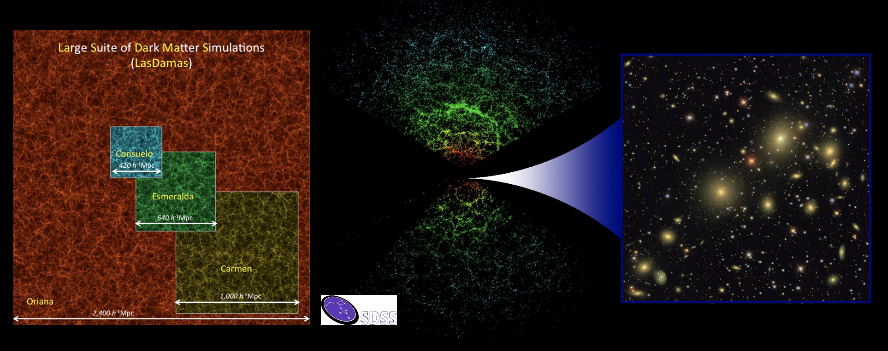
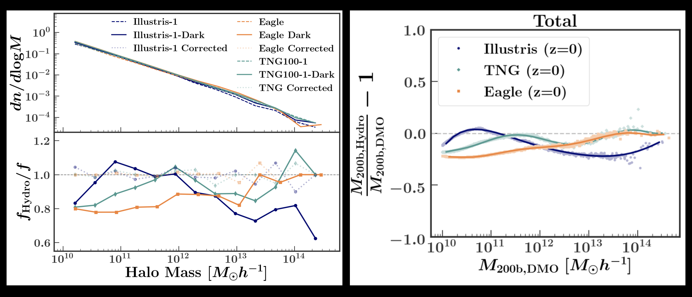
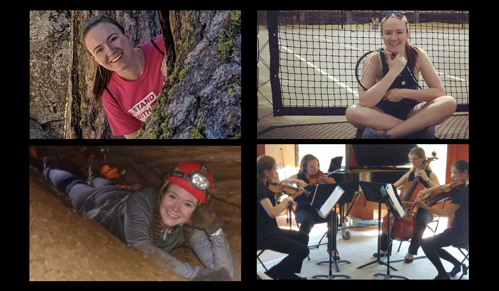

Research

I am a 5th year PhD student at Vanderbilt University working with Andreas Berlind. I use a combination of large high-resolution N-body simulations, Halo Occupation Distribution models, and galaxy survey data to constrain both cosmology and the galaxy-halo connection. I primarily use the GADGET-4 simulation code and data from the Sloan Digital Sky Survey.

Recently, my work has focused on understanding the limitations of Halo Occupation Distribution modeling compared to hydrodynamic simulations, as well as halo mass function discrepancies between dark matter only and hydrodynamic simulations. For this work I have made use of results from the Illustris, IllustrisTNG, and EAGLE simulations. A python module to implement the halo mass corrections presented in Beltz-Mohrmann, G. D. & Berlind, A. A., 2021 can be found here.
Media
Watch my flash talk from the 2020 KITP Online Reunion Conference: The Galaxy‑Halo Connection Across Cosmic Time - Recent Updates: "HMF Discrepancies between Hydro and DMO Simulations" (8:21)
See my presentation from Mock Innsbruck: The Connection Between Galaxies and Dark Matter Haloes (2020): "Taking Halo Modeling to the Next Level"
See my poster from the 2019 First Shanghai Assembly on Cosmology and Galaxy Formation: "Taking HOD Modeling to the Next Level: Results from SDSS and Tests with Hydrodynamic Simulations"
See my poster from the 2019 Santa Cruz Galaxy Workshop: "Can We Ignore Baryons in Halo Modeling?"
Academic Geneology
Membership
I am a member of the American Astronomical Society, Sigma Xi, and The N-Body Shop Collaboration.
Publications
(6) Toward Accurate Modeling of Galaxy Clustering on Small Scales: Extensions to the Standard Halo Model
Beltz-Mohrmann, G. D., Szewciw, A. O., Berlind, A. A., Sinha, M., 2021, in prep.
(5) Toward Accurate Modeling of Galaxy Clustering on Small Scales: Constraining the Galaxy-Halo Connection with Optimal Statistics
Szewciw, A. O., Beltz-Mohrmann, G. D., Berlind, A. A., Sinha, M., 2021, in prep.
(4) The impact of baryonic physics on the abundance, clustering, and concentration of halos
Beltz-Mohrmann, G. D., Berlind, A. A., 2021, submitted to The Astrophysical Journal, arXiv:2103.05076
(3) Testing the Accuracy of Halo Occupation Distribution Modelling using Hydrodynamical Simulations
Beltz-Mohrmann, G. D., Berlind, A. A., Szewciw, A. O., 2020, MNRAS, 491(4):5771, arXiv:1908.11448
(2) Radial Star Formation Histories in Fifteen Nearby Galaxies
Dale, D. A., Beltz-Mohrmann, G. D., Egan, A. A., Hatlestad, A. J., Herzog, L. J., Leung, A. S., McLane, J. N., Phenicie, C., Roberts, J. S., Barnes, K. L., Boquien, M., Calzetti, D., Cook, D. O., Kobulnicky, H. A., Staudaher, S. M., van Zee, L., 2016, The Astronomical Journal, 151(1):4, arXiv:1511.03285
(1) The Light Curve and Period of MT696
Souza, S. P., Beltz-Mohrmann, G. D., Sami, M., 2014, AAVSO, 42(1):154
See my papers on ADS
About Me

I received my BA in astrophysics from Wellesley College in 2016. I also minored in German, and spent a semester abroad at Jacobs University in Bremen, Germany. I went to Bishop George Ahr High School (now St. Thomas Aquinas High School) in Edison, New Jersey.
In my spare time I like to play tennis, hike, sing, play my violin, and take my dog Gadget to the dog park.
Email address: gillian.d.beltz-mohrmann@vanderbilt.edu
Office: 6911 Steven Center, Vanderbilt University, Nashville, TN 37235